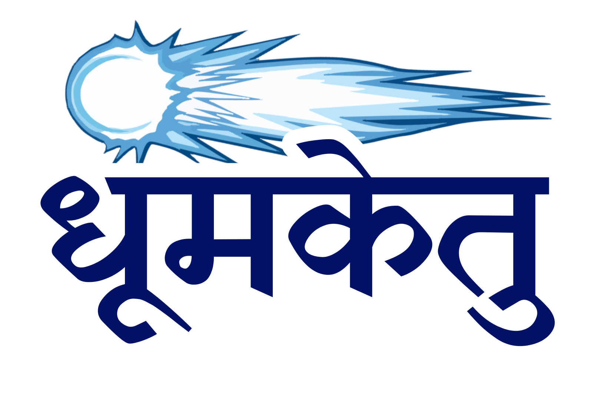
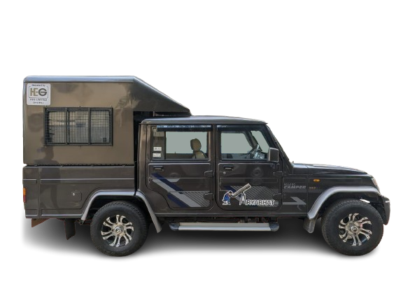
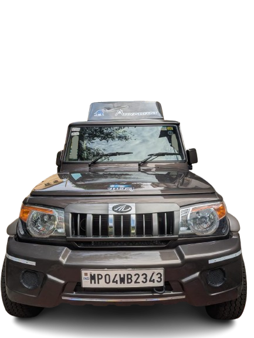
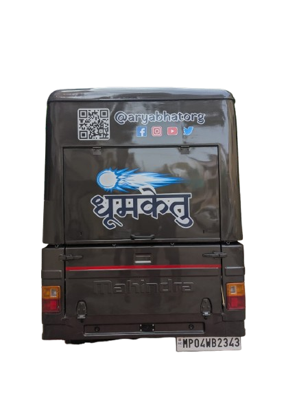

Spreading Knowledge Everywhere



Dhoomketu is our mobile observatory — a Mahindra Bolero Camper converted to carry telescopes and a few wide-eyed students out to dark skies. When she visits your school, the sky comes with her.
Donated by HEG Limited, Bhopal